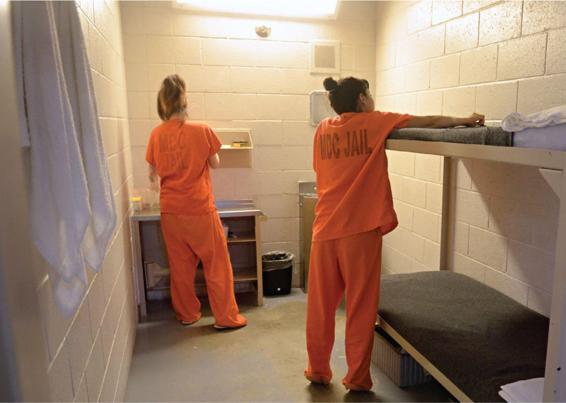
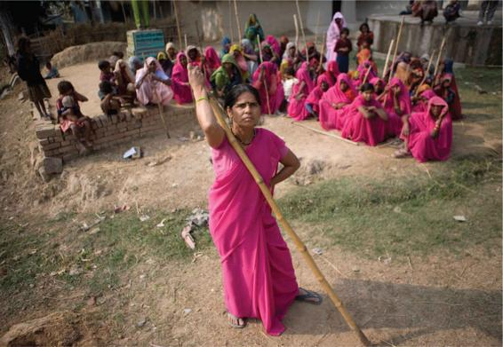

Are some individuals or groups more likely to commit crimes or to become the victims of crime? Criminologists say yes—research and crime statistics show that crime and victimization are not randomly distributed among the population (Figure 7.6). Men are more likely than women, for example, to commit crimes; the young are more often involved in crime than are older people.
The likelihood of someone becoming a victim of crime is linked to the area where he or she lives. Inner-city residents run a much greater risk of becoming victims than do residents of affluent suburban areas. The fact that ethnic minorities are concentrated in inner-city regions appears to be a significant factor in their higher rates of victimization.
Gender and Crime
Like other areas of sociology, criminological studies have traditionally ignored half the population: Women are largely invisible in both theoretical considerations and empirical studies. Since the 1970s, important feminist works have noted the way in which criminal transgressions by women occur in different contexts than those by men and how assumptions about appropriate male and female roles influence women’s experiences with the criminal justice system. Feminists have also highlighted the prevalence of violence against women, both at home and in public.
Male and Female Crime Rates The statistics on gender and crime are startling. For example, of all crimes reported in 2018, nearly three-quarters of arrestees (73 percent) were men (OJJDP, 2019). There is also an enormous imbalance in the ratio of men to women in prison, not only in the United States but in all the industrialized countries. In 2017, women made up 7 percent of the state and federal prison populations in the United States (Bronson and Carson, 2019). There are also contrasts between the types of crimes men and women commit. Women’s offenses rarely involve violence and are almost all small scale. Petty thefts such as shoplifting and public order offenses such as prostitution and public drunkenness are typical female crimes.
Perhaps the real gender difference in crime rates is smaller than the official statistics show. In the 1950s, Otto Pollak suggested that certain crimes perpetrated by women go unreported because women’s domestic role enables them to commit crimes at home and in the private sphere. Pollak (1950) also argued that female offenders are treated more leniently because male police officers adopt a “chivalrous” attitude toward them. The suggestion that the criminal justice system treats women more leniently has prompted much debate. The “chivalry thesis” has been applied in two ways. First, police and other officials may indeed regard female offenders as less dangerous than men and excuse activities for which they would arrest males. Second, in sentencing for criminal offenses, women get sent to prison much less often than men.
At 81 per 100,000 in 2017, the imprisonment rate for adult women is significantly lower than the imprisonment rate for adult men: 1,082 per 100,000.
A number of empirical studies have tested the chivalry thesis, but the results remain inconclusive. One difficulty is assessing the relative influence of gender compared with other factors such as age, class, and race. For example, older women offenders tend to be treated less aggressively than their male counterparts. Other studies have shown that Black women receive worse treatment than White women at the hands of the police.
Another perspective, which feminists have adopted, examines how social understandings about femininity affect women’s experiences in the criminal justice system. One argument is that women receive harsher treatment when they have allegedly deviated from the norms of female sexuality. For example, young girls who are perceived to be sexually promiscuous are more often taken into custody than boys who are promiscuous. Such young women are seen as doubly deviant—not only breaking the law but also flouting appropriate female behavior. In such cases, they are judged less on the nature of the offense and more on their deviant lifestyle. Thus, the criminal justice system operates under a double standard, considering male aggression and violence as natural but female offenses as reflecting psychological imbalances (Heidensohn, 1985).
To make female crime more visible, feminists have conducted detailed investigations on female criminals—from girl gangs to female terrorists to women in prison. Such studies have shown that violence is not exclusively a characteristic of male criminality. Women are much less likely than men to participate in violent crime but are not always inhibited from doing so. Why, then, are female rates of criminality so much lower than those of men?
Some evidence shows that female lawbreakers often avoid coming before the courts because they persuade the police or other authorities to see their actions in a particular light. They invoke the “gender contract”—the implicit contract between men and women whereby to be a woman is to be erratic and impulsive on the one hand and in need of protection on the other (Worrall, 1990).
Yet differential treatment cannot account for the vast difference between male and female rates of crime. The reasons are probably the same as those that explain gender differences in other spheres: Male crimes remain “male” because of differences in socialization and because men’s activities are still more nondomestic than those of most women. Further, control theory may also offer insights. Because women are usually the primary caregiver to their children and other relatives, they may have attachments and commitments that deter them from committing deviant acts. Imprisonment would have very high and undesirable costs both to women and to their kin.
Ever since the late nineteenth century, criminologists have predicted that gender equality would reduce or eliminate the differences in criminality between men and women, but as yet, crime remains a gendered phenomenon.
Crimes against Women In certain categories of crime—domestic violence, sexual harassment, sexual assault, and rape—men are overwhelmingly the aggressors and women the victims. Although each of these acts has been practiced by women against men, they remain almost exclusively crimes against women. It is estimated that one-quarter of women are victims of violence at some point, but all women face the threat of such crimes either directly or indirectly.
For many years, the criminal justice system ignored these offenses; victims had to persevere tirelessly to gain legal recourse. Even today, the prosecution of crimes against women is hardly straightforward. Yet feminist criminology has raised awareness of crimes against women and integrated such offenses into mainstream debates on crime. In this section, we examine the crime of rape, leaving discussions of domestic violence and sexual harassment to other chapters (see Chapters 10 and 15).
The extent of rape is very difficult to assess accurately. Only a small proportion of rapes comes to the attention of the police and is recorded in the statistics. In 2018, 433,648 cases of rape or sexual assault were reported in the United States (RAINN, 2019). However, from surveys of victims, we know that only about a third of instances of rape and sexual assault are reported to the police. At the same time, data from a nationally representative survey indicates that 1 in 6 women and 1 in 33 men in the United States have been victims of a rape or attempted rape (Tjaden and Thoennes, 2010).
The Gulabi Gang, also known as the Pink Vigilantes, fights against police corruption, domestic violence, and sexual abuse by physically attacking policemen who refuse to register rape cases and husbands who hit their wives.
A woman might not report sexual violence for many reasons. The majority of rape victims either wish to put the incident out of their minds or are unwilling to participate in the humiliating process of medical examination, police interrogation, and courtroom cross-examination. The legal process takes a long time and can be intimidating. Courtroom procedure is public, and the victim must face the accused. Proof of penetration, the identity of the rapist, and the fact that the act occurred without the woman’s consent all have to be forthcoming. A woman may feel that she is the one on trial, particularly if her own sexual history is examined publicly, as is often the case.
Recently, women’s groups have sought change in both legal and public thinking about rape, stressing that rape should not be seen as a sexual offense but as a violent crime. It is not just a physical attack but an assault on an individual’s integrity and dignity. Rape is clearly related to the association of masculinity with power, dominance, and toughness. It is not primarily the result of overwhelming sexual desire but of the ties between sexuality and feelings of power and superiority. The sexual act itself is less significant than the debasement of the woman (Estrich, 1987). This campaign has managed to change legislation, and today, rape is generally recognized in law as a type of criminal violence.
In a sense, all women are victims of rape. Women who have never been raped may be afraid to go out alone at night, even on crowded streets, and may be almost equally fearful of being alone in a house or apartment. Susan Brownmiller (1975) has argued that rape is part of a system of male intimidation that keeps all women in fear. Those who are not raped are affected by the anxieties thus provoked and by the need to be more cautious in everyday aspects of life than men have to be.
Crimes against Gays and Lesbians
Feminists claim that understandings of violence are highly gendered and are influenced by perceptions about risk and responsibility. Because women are considered less able to defend themselves, common sense holds that they should modify their behavior to reduce the risk of victimhood. For example, not only should women avoid walking in unsafe neighborhoods alone and at night, but they also should avoid dressing provocatively or behaving in a manner that could be misinterpreted. Women who fail to do so can be accused of “asking for trouble.” In a court setting, their behavior can be a mitigating factor in considering the perpetrator’s act of violence (Dobash and Dobash, 1992; Richardson and May, 1999). It has been suggested that a similar logic applies in violent acts against gay men and lesbians.
Victimization studies reveal that gays and lesbians experience a high incidence of violent crime and harassment. In 2018, there were 1,196 anti-LGBT incidents affecting 1,445 victims (FBI, 2018b). Because sexual minorities remain stigmatized and marginalized in many societies, they are more often treated as deserving of crime rather than as innocent victims. Same-sex relationships are still seen as belonging to the private realm, whereas heterosexuality is the norm in public spaces. Lesbians and gay men who display their sexual identities in public are often blamed for making themselves vulnerable to crime, in a sense even provoking it. This notion ultimately denies both the essential personhood and rights of the victim. Such crimes have led many social groups to call for hate-crime legislation to protect the human rights of groups who remain stigmatized.
Crimes of the Powerful
Although there are connections between crime and poverty, it would be a mistake to suppose that crime is concentrated among the poor. Crimes by people in positions of power and wealth can have farther-reaching consequences than the often petty crimes of the poor. The term white-collar crime, introduced by Edwin Sutherland (1949), refers to crime affluent people commit. This category of criminal activity includes tax fraud, antitrust violations, illegal sales practices, securities and land fraud, embezzlement, the manufacture or sale of dangerous products, and illegal environmental pollution, as well as straightforward theft.
The most famous recent case of white-collar crime with obvious victims was the Bernie Madoff scandal. A trusted investment adviser, Madoff turned his wealth-management business into the largest Ponzi scheme in history, defrauding his clients—many of them senior citizens and charitable organizations—and robbing them of more than $18 billion.
One of the most high-profile white-collar criminals in recent memory is Bernie Madoff, a financier who choreographed the largest Ponzi scheme in U.S. History.
The distribution of white-collar crimes is even harder to measure than that of other types of crime; most do not appear in the official statistics at all. Efforts to detect white-collar crime are limited, and rarely do those who are caught go to jail. Although the authorities regard white-collar crime more tolerantly than crimes of the less privileged, the amount of money involved in white-collar crime in the United States is 40 times greater than the amount involved in crimes against property, such as robberies, burglaries, larceny, forgeries, and car thefts (President’s Commission on Organized Crime, 1986). Some forms of white-collar crime, moreover, affect more people than lower-class criminality does. An embezzler might rob thousands—or today, via computer fraud, millions—of people.
Corporate CrimeCorporate crime describes the offenses large corporations commit. The increasing power and influence of large corporations and their global reach mean that they touch our lives in many ways—from producing the cars we drive and the food we eat to affecting the natural environment and the financial markets.
Corporate crime is pervasive and widespread. Both quantitative and qualitative studies of corporate crime have concluded that a large number of corporations do not adhere to legal regulations (Slapper and Tombs, 1999). Studies have revealed six types of violations: administrative (paperwork or noncompliance), environmental (pollution, permit violations), financial (tax violations, illegal payments), labor (working conditions, hiring practices), manufacturing (product safety, labeling), and unfair trade practices (anticompetition, false advertising).
Sometimes there are obvious victims; for instance, environmental disasters such as the 2010 Upper Big Branch coal mine explosion in West Virginia and the health dangers posed to women by silicone breast implants. One of the most devastating examples in recent years was the April 2013 fire and collapse of an eight-story commercial building, Rana Plaza, in Bangladesh. The death toll topped 1,100 with an additional 2,500 injured people rescued from the building. Rana Plaza housed several garment manufacturers. Although building inspectors had found cracks in the building days earlier and recommended that the building be evacuated and shut down, many of the garment workers were forced to return to work the following day.
As the Rana Plaza tragedy demonstrates, the hazards of corporate crime are all too real. But very often, victims of corporate crime do not see themselves as such. This is because in “traditional” crimes, the proximity between victim and offender is much closer; it is difficult not to realize that you have been mugged! In the case of corporate crime, greater distances in time and space mean that victims may not realize they have been victimized or may not know how to seek redress for the crime.
Pollution, product mislabeling, and violations of health and safety regulations affect much larger numbers of people than petty criminality affects. However, the effects of corporate crime are often experienced unevenly within society. Those who are disadvantaged by other socioeconomic inequalities suffer disproportionately. For example, safety and health risks in the workplace tend to occur in low-paying occupations. Many of the risks from health care products and pharmaceuticals have affected women more than men, as in the case of contraceptives and fertility treatments with harmful side effects (Slapper and Tombs, 1999).
The collapse of Rana Plaza in Bangladesh, which killed at least 1,100 and injured another 2,500, is a tragic example of corporate crime.
Cybercrime
It seems certain that the information and telecommunications revolution will change the face of crime. Internet-based fraud is one of the fastest-growing categories of crime. The annual cost of cybercrime worldwide is estimated to be $600 billion (Lewis, 2018). The 2019 Global State of SMB Cybersecurity report conducted by the Ponemon Institute and conducted on behalf of Keeper Security found that more than 76 percent of American companies experienced a cyberattack over the previous year, yet only 28 percent of security violations were reported to the police, likely out of fears that negative publicity would damage the company’s stock price or that competitors would steal valuable information (Computer Security Institute, 2011).
The global reach of telecommunications crime poses challenges for law enforcement in terms of detecting and prosecuting crimes. Police from the countries involved must determine the jurisdiction in which the act occurred and agree on extraditing the offenders and providing evidence for prosecution. Although police cooperation across national borders may improve with the growth of cybercrime, at present, cybercriminals have a great deal of room to maneuver.
At a time when financial, commercial, and production systems in countries worldwide are being integrated electronically, rising levels of Internet fraud and unauthorized electronic intrusions are potent warnings of the vulnerability of computer security systems. From the FBI to the Japanese government’s anti-hacker police force, governments are scrambling to contend with new and elusive forms of cross-national computer activity.
CONCEPT CHECKS
How does Devah Pager’s study of former inmates support Michelle Alexander’s argument that mass incarceration has created a new caste system in the United States?
According to David Garland, what accounts for the continued use of capital punishment in the United States?
Contrast the following two explanations for the gender gap in crime: behavioral differences and biases in reporting.